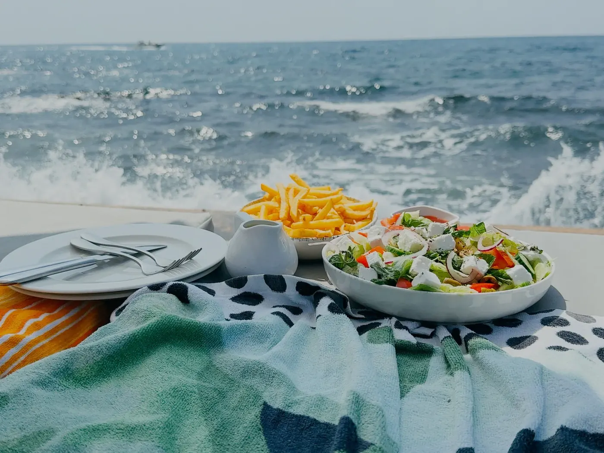
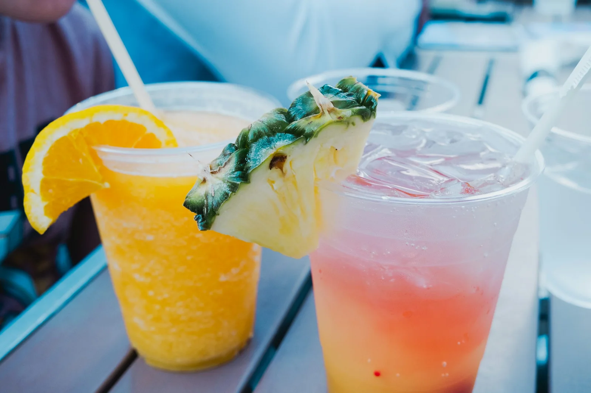
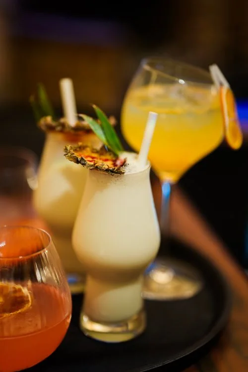
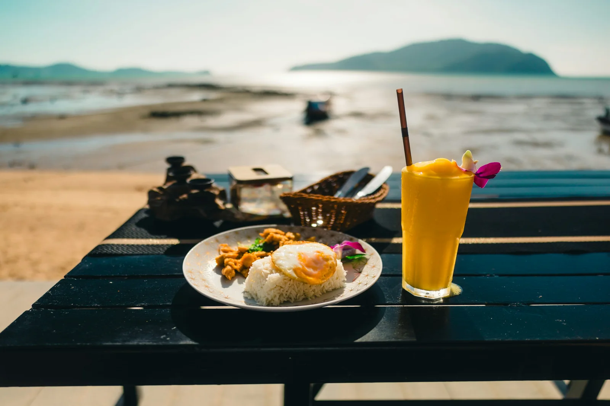
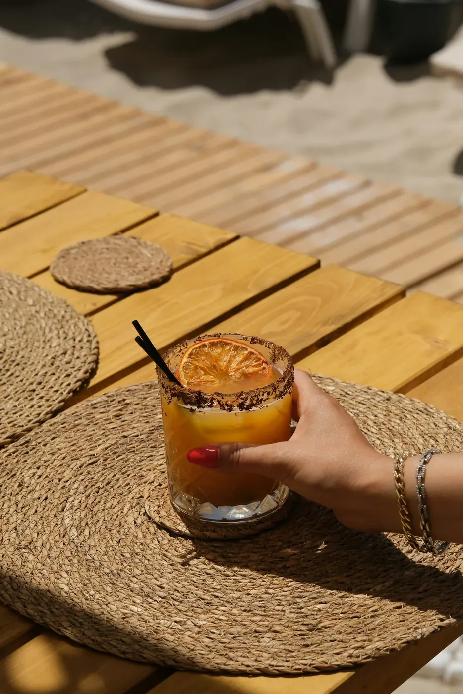
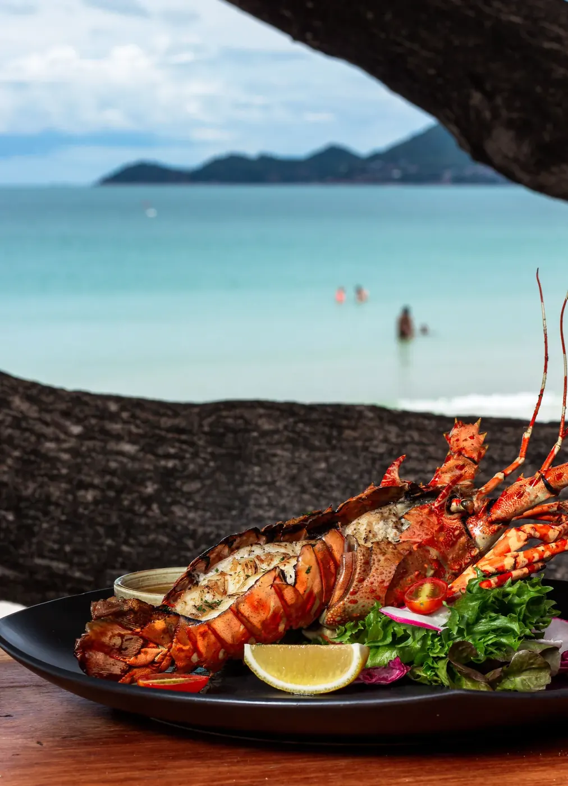

01 · Bar food
Something to share
Easygoing bar food for casual bites, catch-ups and the kind of table where everyone reaches in.

Our offering is designed for beach days and shared moments. Specific items and pricing can be confirmed directly with the venue.

Easygoing bar food for casual bites, catch-ups and the kind of table where everyone reaches in.

Bright, refreshing cocktails that fit the pace of the coast and the colour of the evening.

A relaxed choice for warm afternoons, beach conversations and unwinding at the end of the day.

A slower pour for long conversations, shared plates and an evening that does not need to be rushed.

Refreshing drinks for beach days, designated drivers and everyone looking for something easy.

Bring your appetite, settle into the outdoor seating and let the beachfront do the atmosphere.
We have kept the descriptions general until the current menu and pricing are confirmed. For availability, group needs or a specific request, contact Fonty's directly.
Ask on WhatsApp ↗